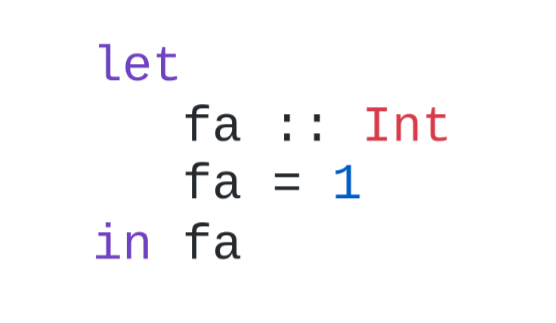
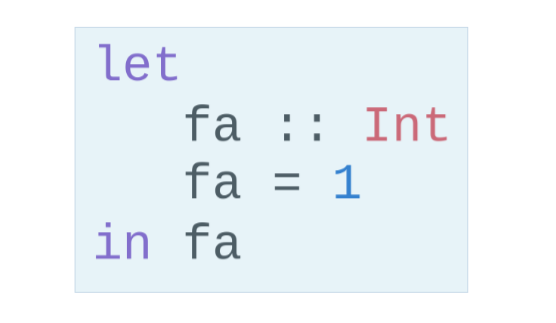
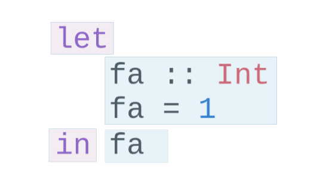
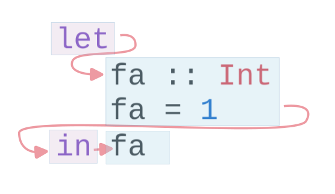
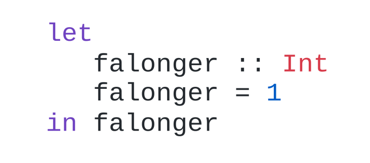
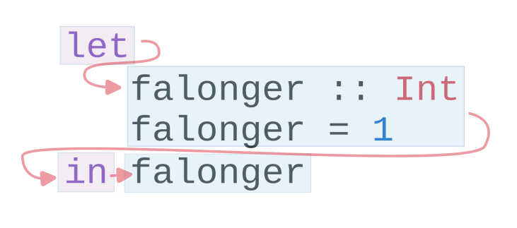
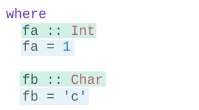
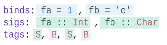
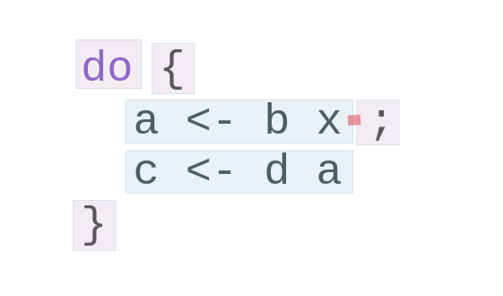
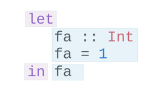

Alan Zimmerman
Haskell Ecosystem Workshop, ZuriHac, 2024-06-07
To allow a tool to
GHC ParsedSource,1, 0x01, 001, 0_01
{-# Language CPP #-}
{-# LANGUAGE CPP #-}
let
fa :: Int
fa = 1
in fa
A located AST element is treated as a self-contained unit




Deltas : Directly provide the spacing


data DeltaPos
= SameLine { deltaColumn :: Int }
| DifferentLine { deltaLine :: Int, deltaColumn :: Int }
ParsedSource is not a completely accurate reflection of the original source.ValBinds separates out [Sig] and [Bind]ClassDecl and ClsInstDecl separate out Bind s,
Sig s, Type family instances etc

SrcSpan on steroids" we wrap
everything in, and fit them in when we print, if they fit into the
current gap.
ParsedSourcetype ParsedSource = Located (HsModule GhcPs)
For now we accept GhcPs as simply a marker of the AST from the
parsing phase.
type family XRec p a = r | r -> a
type family Anno a = b
type instance XRec (GhcPass p) a = GenLocated (Anno a) a
type LHsExpr p = XRec p (HsExpr p)
type instance Anno (HsExpr (GhcPass p)) = SrcSpanAnnA
type SrcSpanAnnA = EpAnn AnnListItem
data EpAnn ann = EpAnn
{ entry :: !Anchor -- basically SrcSpan when parsed
, anns :: !ann
, comments :: !EpAnnComments
}
type Anchor = EpaLocation
type EpaLocation = EpaLocation' [LEpaComment]
data EpaLocation' a = EpaSpan !SrcSpan
| EpaDelta !DeltaPos !a
AnnListItem-- | Annotation for items appearing in a list. They can have one or
-- more trailing punctuations items, such as commas or semicolons.
data AnnListItem
= AnnListItem {
lann_trailing :: [TrailingAnn]
}
Tie up to prior hand wavy part
(L
(EpAnn
(EpaSpan { DumpParsedAst.hs:5:1-16 })
(AnnListItem
[])
(EpaComments
[]))
...
SourceText for Literals,AnnKeywordId or EpToken)AnnKeywordIddata AnnKeywordId
...
| AnnIn
| AnnLet
data AddEpAnn = AddEpAnn AnnKeywordId EpaLocation
EpTokendata EpToken (tok :: Symbol)
= NoEpTok
| EpTok !EpaLocation
Used as a type EpTok "let"
-- Extract string for printing
getEpTokenString :: forall tok. KnownSymbol tok => EpToken tok -> Maybe String
getEpTokenString NoEpTok = Nothing
getEpTokenString (EpTok _) = Just $ symbolVal (Proxy @tok)
data HsExpr p
...
| HsLet (XLet p) (HsLocalBinds p) (LHsExpr p)
type family XLet x
type instance XLet GhcPs = (EpToken "let", EpToken "in")

type Parser a = GHC.DynFlags -> FilePath -> String -> ParseResult a
parseExpr :: Parser (GHC.LHsExpr GHC.GhcPs)
parseImport :: Parser (GHC.LImportDecl GHC.GhcPs)
parseType :: Parser (GHC.LHsType GHC.GhcPs)
parseDecl :: Parser (GHC.LHsDecl GHC.GhcPs)
parseStmt :: Parser (GHC.ExprLStmt GHC.GhcPs)
parsePattern :: Parser (GHC.LPat GHC.GhcPs)
parseModule :: LibDir -> FilePath -> IO (ParseResult GHC.ParsedSource)
ghc-exactprint exists
Stored in EpAnn
data EpAnnComments = EpaComments
{ priorComments :: ![LEpaComment] }
| EpaCommentsBalanced
{ priorComments :: ![LEpaComment]
, followingComments :: ![LEpaComment] }
balanceComments-- a random comment
-- here is a function
foo = 3
-- here is a trailing comment
-- Another random aside
-- another function
bar = 2
-- a random comment
-- here is a function
foo = 3
-- here is a trailing comment
-- Another random aside
-- another function
bar = 2
FunBind comments-- a random comment
-- here is a function
foo True = 3
-- here is a trailing comment
-- Another random aside
-- another function
foo False = 2
-- trailing second fun
-- a random comment
On FunBind prior comments
-- here is a function
First match (OOPS, BUG in 1.10.0.0)
foo True = 3
Second match
-- here is a trailing comment
-- Another random aside
-- another function
foo False = 2
On FunBind following comments
-- trailing second fun
test = TestList [mkTestModChange libdir balanceComments "AFile.hs"]
balanceComments :: Changer
balanceComments _libdir lp = return $ replaceDecls lp ds'
where
ds = hsDecls lp
ds' = balanceCommentsList ds
class HasDeclsclass (Data t) => HasDecls t where
hsDecls :: t -> [LHsDecl GhcPs]
replaceDecls :: t -> [LHsDecl GhcPs] -> t
replaceDecls-- |This is a function
foo = x -- comment1
-- trailing comment
to
-- |This is a function
foo = x -- comment1
where
nn = 2
-- trailing comment
addLocaLDecl1 :: Changer
addLocaLDecl1 libdir top = do
Right (L ld (ValD _ decl)) <- withDynFlags libdir (\df -> parseDecl df "decl" "nn = 2")
let
decl' = setEntryDP (L ld decl) (DifferentLine 1 5)
(de1:d2:d3:_) = hsDecls top
(de1',d2') = balanceComments de1 d2
(de1'',_) = modifyValD (getLocA de1') de1' $ \_m d ->
((wrapDecl decl' : d), Nothing)
return $ replaceDecls top [de1'', d2', d3]
modifyValDFunBind?..
[ma1,_ma2] = ms -- of de1
(de1',_) = modifyValD (getLocA ma1) de1 $ \_m decls ->
(newDecl : decls, Nothing)
type Decl = LHsDecl GhcPs
type PMatch = LMatch GhcPs (LHsExpr GhcPs)
modifyValD
:: forall t. SrcSpan -> Decl
-> (PMatch -> [Decl] -> ([Decl], Maybe t))
-> (Decl, Maybe t)
And packFunDecl, unpackFunDecl
AnnSortKey?replaceDeclscaptureOrderBindsreplaceDeclsClassDecl (and hsDeclsClassDecl)
oderedDecls
When NoAnnSortKey,
When AnnSortKey DeclTag
Map.Map DeclTag [LHsDecl GhcPs] from assorted ClassDecl partswhere for adding/removing decls to HsValBindsThis is the heart of the thing
But will not look in detail, it is too complex
Suffice to say,
exactPrint :: ExactPrint ast => ast -> String
RdrName s in the AST are LocatedN, containing
a SrcSpan when originally parsed.RenamedSource does not remove named locations,
although it may move them around a bit.
So perform a generic traversal of the RenamedSource,
building a map of
SrcSpan -> Name
GHC_CPPshould it be split?
rest outside
makeDeltaAst, otherwise there will be no SrcSpan
anywhere in the AST (but when ready to make a change, using it to
capture spacing of the local thing being edited may help)EpAnnNotUsed is gone, use noAnn insteaduniqueSrcSpanT is no longer needed, use an appropriate
EpaDelta location insteadEpaDelta (DifferentLine row col) interprets col differently.
You must add 1 to get the prior spacing.